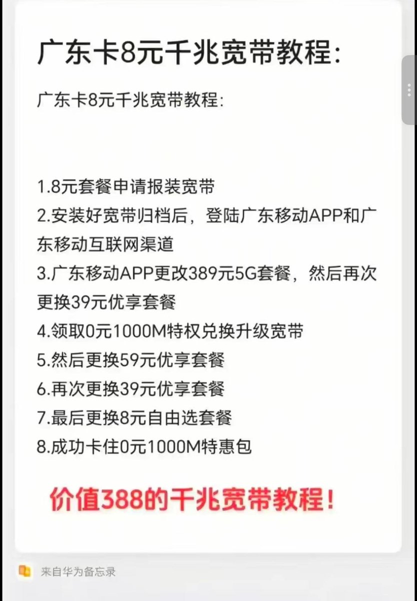

妖火这个0元千兆宽带的风险还是很大的，不仅要你650块还得邮寄卡到他那边，万一再动点手脚那就不知道了
其实适用于所有广东移动的号卡，最便宜的就是广州移动的从化0了。那位车头还是个学生，还说没有营业厅熟人绝对不会卡成功，具体流程见图吧
有些事情不是误人子弟、乱说一通，而是广东移动省公司留有的长期漏洞，这对平时老实付费的用户来说公平吗？换言之，就那么几步教程，帮别人改完赚钱，对方用着用着还被移动公司起诉，那就真笑掉大牙了

其实适用于所有广东移动的号卡，最便宜的就是广州移动的从化0了。那位车头还是个学生，还说没有营业厅熟人绝对不会卡成功，具体流程见图吧
有些事情不是误人子弟、乱说一通，而是广东移动省公司留有的长期漏洞，这对平时老实付费的用户来说公平吗？换言之，就那么几步教程，帮别人改完赚钱，对方用着用着还被移动公司起诉，那就真笑掉大牙了

网传广东全省0元千兆宽带其实是卡移动bug的，要寄板卡就是不想让你知道方法
一个订购，一个改8同时发，跟刷钻一个原理，之前老铁论坛有发过方法。一个成功订购宽带套餐，一个成功订购8元套餐，按顺序发，成功改8，宽带还在就行 https://t.co/TNhgU30kO1
一个订购，一个改8同时发，跟刷钻一个原理，之前老铁论坛有发过方法。一个成功订购宽带套餐，一个成功订购8元套餐，按顺序发，成功改8，宽带还在就行 https://t.co/TNhgU30kO1